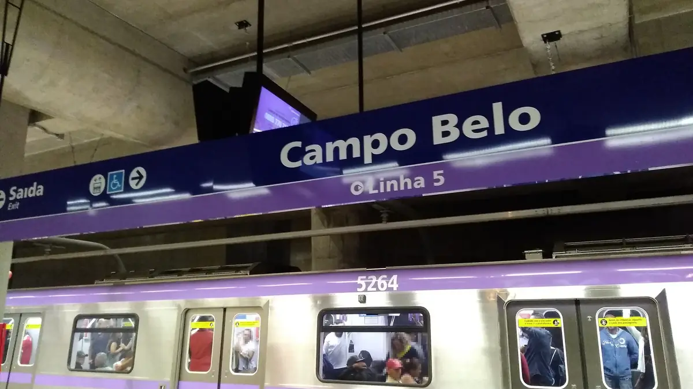

Transporte em São Paulo
Ônibus, metrô e trem ligam a cidade. Com o Bilhete Único, você paga menos quando troca de condução.


Informação de orientação. Confirme nos órgãos oficiais, pois regras, valores e horários podem mudar.
Bilhete Único
É o cartão para pagar ônibus municipais, metrô e trem em São Paulo.
Como fazer
- Faça o cadastro no site de atendimento da SPTrans e envie uma foto.
- Depois da aprovação, retire o cartão em um posto de atendimento, com documento com foto. Você também pode pedir entrega em casa, pagando o envio.
- Coloque créditos nos pontos de recarga indicados pela SPTrans.
- Cada pessoa pode ter só um Bilhete Único.
- Também existe o Bilhete Único sem nome. Para comprar, é preciso documento com foto e CPF.
Integração: pague menos ao trocar de condução
Com créditos comuns, dentro de 3 horas:
- até 4 ônibus diferentes, pagando uma só tarifa;
- metrô ou trem mais até 3 ônibus, pagando a tarifa de integração. A viagem de metrô ou trem precisa ser nas 2 primeiras horas.
Quanto custa
Os valores mudam. Confira a tabela atual de tarifas no site da SPTrans.
Metrô e trem
- O metrô e os trens metropolitanos ligam várias regiões da cidade e da Grande São Paulo.
- Algumas linhas são operadas por empresas privadas, como a ViaQuatro e a ViaMobilidade.
- Você pode pagar com o Bilhete Único. O mapa das linhas fica nas estações e nos sites oficiais.
Ônibus
- Os ônibus municipais são gerenciados pela SPTrans. Para entrar, passe o Bilhete Único no validador.
- Ônibus que vão para outras cidades da região são intermunicipais (EMTU) e têm outras regras.
Domingão Tarifa Zero
- Aos domingos, os ônibus municipais são grátis o dia todo. Também vale em 25 de dezembro, 1º de janeiro e 25 de janeiro.
- Não vale para metrô, trem nem ônibus intermunicipais.
- Mesmo grátis, passe o Bilhete Único no validador. Se não tiver cartão, peça ajuda ao motorista ou ao cobrador.
O programa começou em dezembro de 2023. Confirme no site da SPTrans se continua valendo.verificar
Gratuidades e descontos
- Pessoas com 60 anos ou mais não pagam ônibus municipais, metrô e trem. De 60 a 64 anos, a gratuidade é carregada todo mês no Bilhete Único comum. A partir de 65 anos, existe o Bilhete Único Especial da Pessoa Idosa.
- Estudantes: o Bilhete Único de Estudante é pedido pela escola, que envia os dados para a SPTrans.
- Pessoas com deficiência podem pedir o Bilhete Único Especial. Confira os requisitos na SPTrans.verificar
- Benefícios para desempregados e tarifa social para baixa renda: não confirmamos as regras atuais em fonte oficial. Pergunte à SPTrans, ao Metrô e à CPTM.verificar
Aplicativos de rota
- Aplicativos de mapa gratuitos, como Google Maps e Moovit, mostram qual ônibus, metrô ou trem pegar.
- Para gastar menos internet, planeje a rota quando estiver no Wi-Fi e tire uma foto da tela.
- Os sites da SPTrans, do Metrô e da CPTM também mostram linhas e mapas.
Fontes oficiais
Consultado em 8 de outubro de 2026.
- SPTrans: Bilhete Único Comum
- SPTrans: Perguntas e respostas sobre o Bilhete Único
- Prefeitura de São Paulo: Regras do Bilhete Único Anônimo
- SPTrans: Tarifas
- SPTrans: Domingão Tarifa Zero
- SPTrans: Perguntas e respostas sobre a Tarifa Zero
- SPTrans: Gratuidade de 60 a 64 anos
- SPTrans: Bilhete Único Especial da Pessoa Idosa
- SPTrans: Bilhete Único de Estudante
- CPTM: Acesso livre para idosos
- Metrô de São Paulo
- CPTM